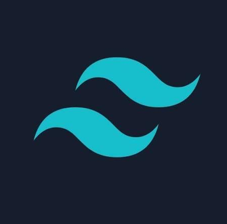
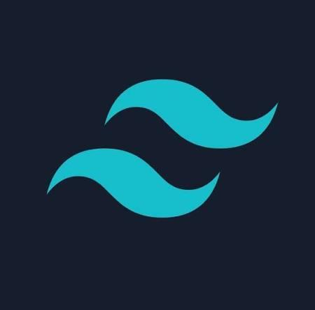

Olá me chamo João Gabriel, eu estudo e trabalho com desenvolvimento web.
Alguns dos meus Projetos você encontrará abaixo
saiba mais
Mas do que uma simples porta de entrada para um sistema, este projeto demonstra o domínio técnico em transformar requisitos funcionais em uma interface elegante e funcional, pronta para ser integrada a qualquer ecossistema de aplicação web.
O projeto Cordel demonstra maturidade no uso de propriedades avançadas de CSS3. Ao integrar o efeito parallax com uma estrutura semântica de HTML5, o desenvolvedor João Gabriel consegue entregar não apenas um site informativo, mas uma experiência de leitura dinâmica. É um excelente exemplo de como o design digital pode ser usado para preservar e valorizar manifestações culturais, mantendo a responsividade e a performance técnica.
O projeto "Curiosidades de Tecnologia", focado na história do mascote do Android, representa um marco no meu desenvolvimento Front-End. esse site não é apenas um exercício de curso, mas uma demonstração clara de atenção aos detalhes e domínio das tecnologias base da web, transformando uma curiosidade tecnológica em uma experiência digital bem construída.
O meu portfólio no Netlify é a síntese do meu percurso na área do Desenvolvimento Web. Ao centralizar projetos que variam desde interfaces de autenticação até layouts culturais com efeitos avançados (como o Parallax), o site demonstra uma visão clara de organização e profissionalismo. A escolha de uma interface limpa e focada na navegabilidade reforça a minha importância com a Experiência do Utilizador (UX). Mais do que um repositório de códigos, este site é uma prova de maturidade técnica, mostrando que não só sei construir componentes isolados, mas também sei como apresentar uma solução digital completa e coerente ao mercado.


 
